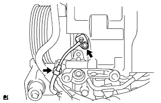

CRANKSHAFT POSITION SENSOR > INSTALLATION |
| 1. INSTALL CRANKSHAFT POSITION SENSOR |
 |
Apply a light coat of engine oil to the O-ring.
 |
Install the sensor with the bolt.
Connect the sensor wire harness clamp.
| 2. INSTALL COOLER COMPRESSOR ASSEMBLY |
Install the cooler compressor (Click here).